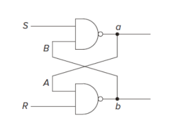
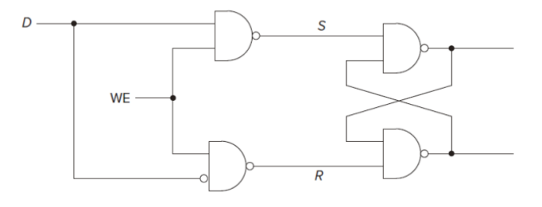
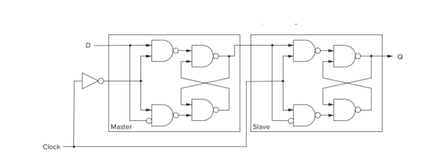

只有当自然语言没有二义性的时候才可以表达算法
算法的三大特点
ISA指出的东西
数据类型 data types
寻址模式 address mode
寻址能力 address ability
指令集 set of instructions
一个微架构仅能实现一个ISA，但一个ISA可以存在于多个微架构中
内存地址是每一个内存位置的唯一标识
内存的可寻址能力是存储在每一个位置中的数据位数
注意IEEE浮点数标准及其相关事项
几个常见ASCII字符的十进制
记一下N MOS和P MOS的形状
- 注意，正常情况下都是P在上N在下
- N type有电压输入时通路，p反之
熟记AND电路、OR电路、NOT电路的宏观形状和微观形状
- 注意AND是在NAND电路的基础上实现的，OR是在NOR的基础上实现的
一个16路输入的多路选择器有4条选择线和1个输出
- 在本次课程中，两路选择器都是S=0时输出左边一路，反之同理
- ，选择线即S
可编程阵列简单记一下形态，，不考虑连接其他功能的情况下
RS Latch，记住R为reset，即重置为0，S为set，即设置为1即可，其他的看图

D Latch，记住WE为1时可写即可，其他的看图就行

一个有限状态机有5个元素
- 有限的状态
- 有限的输入
- 有限的输出
- 明确定义的所有状态之间的转换
- 明确定义的如何获得额外的输出
Moore模型
- 下一个状态由当前状态和输入决定
- 输出由当前状态决定
Mealy模型
- 下一个状态和输出均由当前状态和输入决定
Master-Slave Flip-flop主从触发器
- 当clock=0时，主触发器可写，从触发器不可写， data存入主触发器中
- 当clock=1时，主触发器不可写，从触发器可写，data存入从触发器中，并且输出
- 进入下一个时钟周期后，重复1，2，这样就实现了只在始终的正边缘更新数据

冯诺依曼模型的五个组成部分是
内存
处理单元
输入
输出
控制单元
- 程序计数器和指令寄存器也是控制单元的一部分，PC包含下一条指令地址，IR包含当前指令内容
指令状态机的几个阶段
- Fetch
- decode
- evaluate address
- fetch operation
- execute
- store result
Fetch阶段做两件重要的事情
- 将下一步要处理的指令加载到IR中
- 加载下一条指令的地址到程序计数器中
指令分为操作指令、数据迁移指令和控制指令，
- 控制指令可以理解为跳转指令，注意TRAP属于控制指令
- 数据迁移指令就是存储，读取指令
- 操作指令就是加减非这一类指令，注意lea属于操作指令
LC3寻址模式有
- PC-relative addressing mode,mem[PC+SEXT(offset)] = SR
- immediate addressing
- register addressing
- base-offset addressing，如STR，LDR，即mem[BaseR+SEXT(offset)] = SR
- indirect addressing，如LDI，STI，即mem[mem[PC+SEXT(offset)]] = SR
要能读懂有限状态机图
总线(Global Bus)
- 是一组特殊的导线，它向许多组件传送一个16bit的信号
- Bus的输入是三态门，只有三态门开启时才能向总线传输信号
- 任何时候只有1个16bit的信号，由control unit决定是哪一个信号
- 所有组件均能读取bus
- 如果control unit判断当前可写，register才会读取总线上的数据
| 形状 | 作用 |
|---|
| 矩形 | 执行命令 |
| 棱形 | 选择/判断，分支指令即if使用 |
| 椭圆 | 开始/结束 |
条件码(Condition code，cc)是通过bus上的值生成的
简单记一下符号表怎么写
栈的定义只要记住后进先出(LIFO)就行
当使用同步(synchronous)IO时，可以不使用ready bit，因为它是按照周期来的，会定时进行输入输出
设备寄存器
- KBSR 键盘状态寄存器 0xFE00
- KBDR 键盘数据寄存器 0xFE02
- DSR 显示器状态寄存器 0xFE04
- DSR 显示器数据寄存器 0xFE06
设备状态寄存器的第15位(即最左边的一位)用于存储同步信息，1表示有东西
处理器状态寄存器 PSR，0x8002，第15位代表的是程序的运行模式，其中为0时表示特权模式，[10:8]表示优先级别，一共有8种级别，0最低，7最高，[2:0]表示条件码
中断向量表是x01，键盘中断向量的地址是x80，二者拼接在一起就是键盘的中断向量表，该位置存储了键盘中断程序的起始位置
系统识别设备状态寄存器是靠地址控制逻辑单元实现的
内存映射I/O
- 如果load指令的目标地址是一个设备寄存器，则它就是一条输入指令
- 如果store指令的目标地址是一个设备寄存器，则它就是一条输出指令
- 由于程序员使用与内存访问相同的指令来操作I/O，所以设备的每个输入或输出寄存器，都必须有一个与内存中位置相同的标识映射，即I/O设备的寄存器被映射到一组地址，这就是内存映射I/O(memory-mapped I/O)方式
- LC-3采用内存映射I/O方式，其中0x0000~0xFDFF的地址空间用于标识内存，0xFE00~0xFFFF则保留给外部设备使用
异步I/O与同步I/O
- 如果需要额外的同步信息来辅助进行IO，则称为异步IO
- 如果不需要则称为同步IO
轮询方式的IO
- 处理器必须反复查询的交互方式称为轮询方式的IO，举个例子，CPU时不时就往键盘家里跑，只要键盘家里有东西，就把东西拿走，没有东西也要去，不过空手而归
中断驱动IO
- 由外设控制的交互方式称为中断驱动IO，举个例子，键盘有输入的数据时键盘会提醒CPU说嘿，这里有数据，你快来拿一下
中断驱动IO的本质特征是IO设备能够实现以下功能
- 强行中止当前程序的运行
- 使得处理器执行I/O设备请求
- 最后恢复被中断程序的执行
中断驱动IO包括两部分内容
中断使能(enabling)机制，即IO设备是如何通知处理器的
传输机制，即IO数据如何在处理器和设备之间传送
中断使能机制的条件
- IO设备本身却是需要服务
- 设备有请求服务的权限
- 设备中断请求的优先级高于当前处理器所运行程序的优先级
想要中断正在运行的程序，必须满足三个条件
I/O设备提出了中断：ready bit = 1
I/O设备有权限提出中断：KBSR[14]信号，表示IE(Interrupt Enable)，IE=1表示可以打断
I/O设备的需求比当前程序更紧急：INT信号，判断其是priority是否更高，INT=1时可以打断
注意：INT的检测仅在Fetch阶段
当中断发生时LC3会帮我们做哪些事情
- Store PC and PSR in system stack
- If the privilege changes, save the original user stack pointer USP and change R6
- The default interrupt program will save the values of r0~r7，即系统不会帮你保存r0-r7
RTI作用：
- 从Stack中Pop出两个值（也就是调用时push入的的PSR和PC），恢复为PSR和PC
- 此时检查PSR是否返回为用户态（15位是否为1），如果是的话，需要将SSP切换为USP：将R6存到Saved SSP中，并将Saved USP中的值加载到R6。
异常
- Privilege Mode Exception：特权模式异常，执行RTI时PSR[15]=1
- Illegal Opcode Exception：非法操作码，opcode=1101
- Access Control Violation Exception：访问控制违规异常，PSR[15]=1时访问系统空间
在EXECUTE阶段，trap指令做了：
- PSR PC 被压入System Stack。用以在trap执行完之后，恢复之前程序执行的位置。需要注意的是，如果是在用户模式调用trap，R6在此之前应该被存在Saved USP中，并且其值被Saved SSP替换，也就是先把栈从User Stack更新到System Stack。
- 与此同时，PSR的最高位置为0，表示supervisor mode。而优先级部分不变，使之与调用trap的程序保持一置。
- 8位trapvector被ZEXT为16位的地址，PC加载其地址所存储的内容（也就是对应trap程序的起始位置）。
记住写LC3汇编的时候开头不要忘记加.ORIG x3000，结尾不要忘记TRAP，如有必要，代码块的结尾要写个.END
| TRAP指令 | 作用 |
|---|
| IN | 输入一个字符存储到R0中并回显，有输入提示 |
| OUT | 输出R0中的字符 |
| GETC | 输入一个字符存储到R0中，无回显，无输入提示 |
| PUTS | 输出一个字符串，字符串首地址在R0中，每个位置一个字符，注意字符串以\0即0x0000结尾 |
| PUTSP | 输出一个字符串，字符串首地址在R0中，每个位置两个字符，先输出[7:0]，后输出[15:8] |
汇编时，第一次扫描生成符号表(Symbol Table)，第二次才生成机器码
中断程序的处理流程
- 将PSR和PC的内容入栈
- 书写中断代码
- 执行RTI